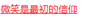
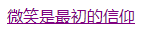
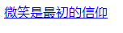
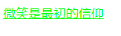

4种状态如：正常状态、访问过后状态、鼠标放上状态、激活状态。| 选择器 | 描述 |
|---|---|
| ：link | 向未被访问的超级链接添加样式,正常状态。 |
| ：visited | 向已经被访问的超级链接添加样式，访问过后状态。 |
| ：hover | 当鼠标悬浮在超级链接上方时，向超级链接添加样式，鼠标放上状态。 |
| ：active | 鼠标放在超级链接上并且点击的一瞬间，向超级链接添加样式，激活状态。 |
让我们进入伪类选择器实践，实践内容将超级链接4种状态进行演示，演示效果如：将向未被访问的超级链接文本颜色设置为红色、已经被访问的超级链接文本颜色设置为绿色、当鼠标悬浮在超级链接上文本颜色设置为紫色、用鼠标点击超级链接的一瞬间文本颜色设置为蓝色。
代码块
<!DOCTYPE html>
<html lang="en">
<head>
<meta charset="UTF-8">
<meta name="viewport" content="width=device-width, initial-scale=1.0">
<meta http-equiv="X-UA-Compatible" content="ie=edge">
<title>伪类选择器</title>
<style>
a:link{
color:red;
}
a:visited{
color: lime;
}
a:hover{
color: purple;
}
a:active{
color: blue;
}
</style>
</head>
<body>
<a href="https://www.cnblogs.com/lq000122/">微笑是最初的信仰</a>
</body>
</html>正常状态结果图

鼠标放上状态结果图

激活状态结果图

访问过后状态

link、visited、hover 、active。